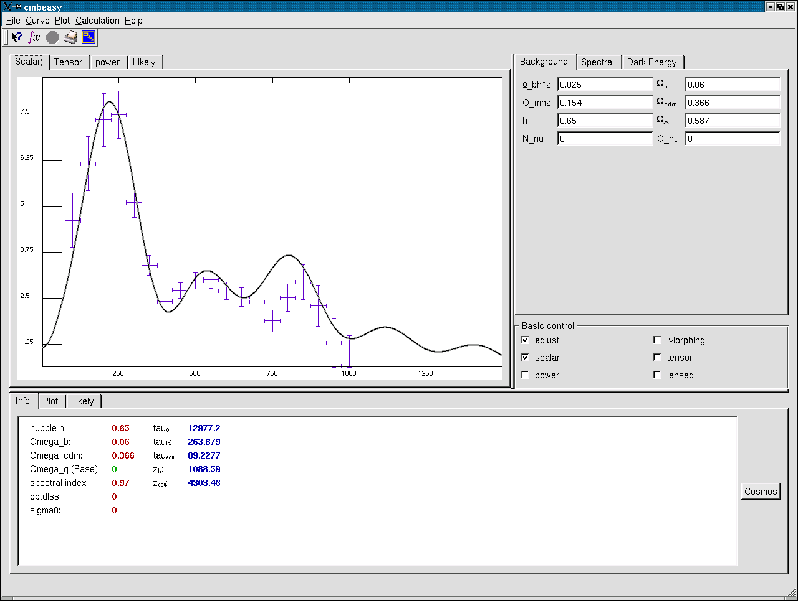

Main Window

The main window is split in four blocks.
The upper left block contains a tab widget holding plots of the data
calculated. Context sensitive Menus acting on the plot or on one
specific curve can be invoked by pressing the right mouse button.
Depending on wether the mouse pointer is hovering over a specific
curve or just somewhere else within the plot, the content of the
menu will be different.
The upper right block contains a tab widget holding the cosmological
parameters. Here, you can specify the amount of baryons etc, the
spectral indices for scalar and tensor perturabtions and last but not
least the nature and parameters of dark energy.
Just below this tabwidget, there is a panel with checkboxes for various controls.
In the lower half of the main window, there is a tab widget which
consists of: a page for information about the cosmology of a certain
active curve, a page controlling the plots and a page to control and
invoke likelyhood analysis.